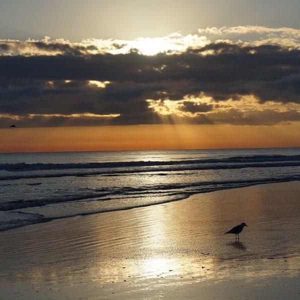

AnguillaAnguilla, island in the eastern Caribbean Sea, a British overseas territory. It is the most northerly of the Leeward Islands in the Lesser Antilles and lies about 12 miles (19 km) north of the island of Saint Martin and 60 miles (100 km) northwest of Saint Kitts. ... Area 35 square miles (91 square km). |
New YorkNew York is the most populous and the most international city in the country. ... Located where the Hudson and East rivers empty into one of the world's premier harbours, New York is both the gateway to the North American continent and its preferred exit to the oceans of the globe. Area 305 square miles (790 square km). |
|

CroatiaCroatia, a parliamentary republic in Central Europe that sits along the Adriatic Sea, is bordered by Slovenia to the north, Hungary and Serbia to the east, and Bosnia and Herzegovina and Montenegro to the south. Croatia is divided into 20 counties and the city of Zagreb, which is also the capital of Croatia. |

BournemouthBournemouth is famous for its 7 miles of golden sandy beaches and clean seas. The Pier is almost in the middle of the beach and offers a small fair, boat trips, an arcade and some other shops. |